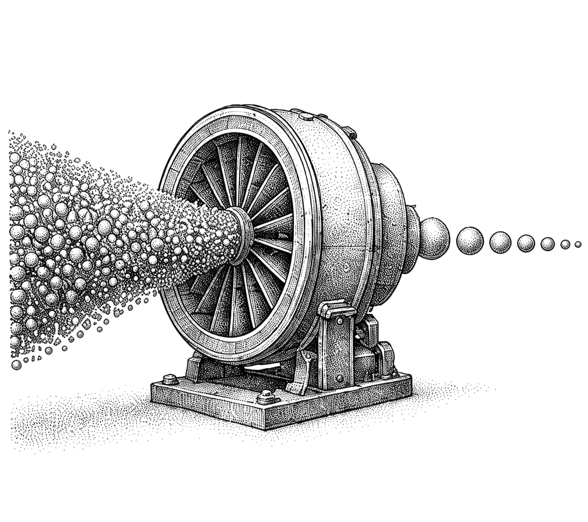

Canonical reference
Evidence-Backed Handbook
A design-system specimen for rigorous technical publishing.
Editorial premise
Build trust into the artifact
A handbook succeeds when its evidence, decisions, visual language, and release history remain understandable after the original author steps away.
The PDF is not the end of the process. It is the durable expression of a traceable system.
Map consequential claims to direct sources.
Use a coherent hierarchy instead of decorative variety.
Validate the final artifact in the environments readers use.
Navigation
Contents
- 01Start with the reader's decision1
- 02Separate evidence from synthesis2
- 03Explain the system visually3
- 04Turn prose into usable contracts4
- 05Make examples teachable5
- 06Design for dense information6
- ANotes and sources7
- IIndex of terms8
Chapter 01
Start with the Reader's Decision
The structure of the handbook should follow the work the reader needs to perform, not the order in which the author discovered the material.

1.1 Separate evidence from synthesis
A factual claim, an interpretation, and a recommendation do different work. The reader should be able to tell which kind of statement they are seeing and inspect the evidence behind consequential claims.[EVD-01]
Use direct sources for documented behavior. When several sources inform a new framework or sequence, label it as author synthesis instead of implying that a single source contains the whole model.
Make the distinction operational
- Write the claim in the smallest testable form.
- Attach the strongest available source and exact locator.
- Record access limits, conflicts, and freshness risk.
- State what the author concludes beyond the source.
Sources[EVD-01] [EVD-02]Author synthesis: the sequence above turns evidence hygiene into an editorial control.
1.2 Explain the system visually
Use a diagram when sequence, ownership, or branching is materially harder to understand in prose.
| Question | Evidence | Decision |
|---|---|---|
| What changed? | Exact source and PDF-text diffs | Classify only observed changes |
| Is it supported? | Claim-level source mappings | Accept, qualify, or reject |
| Is it ready? | Structural and perceptual proof | Release or stop with the failed gate |
2.1 Turn prose into usable contracts
Use structured examples when the reader needs to compare responsibilities or evaluate a budget.
- Reader job
- Choose, implement, diagnose, or verify a production decision.
- Evidence
- Direct sources, access dates, locators, and known limitations.
- Output
- Canonical source, candidate PDF, diffs, ledgers, and proof.
- Release gate
- Explicit approval for the exact validated artifact hash.
A review budget
- Source review
- Authority + relevance + currency + access completeness
- Editorial review
- Reader progress + precision + examples + synthesis labels
- Artifact review
- Structure + typography + images + links + renderer behavior
2.2 Make examples teachable
A compact schema can make the release contract inspectable without turning the handbook into API documentation.
{
"candidate": "handbook.pdf",
"readerFacingContentChanged": true,
"changeCategories": [
"Addition",
"Correction or clarification"
],
"validation": "passed",
"releaseAuthorized": false
}Before approval
- Every changed factual claim maps to inspected evidence.
- The source and PDF-text diffs agree with the change ledger.
- Every page has been rendered and visually inspected.
- The candidate hash is recorded before release authorization.
3.1 Design for dense information
A dense table is acceptable when it reduces cognitive work and remains legible at final size.
| Failure | Detect | Contain | Prevent or regress |
|---|---|---|---|
| Unsupported claim | Missing claim-to-source mapping | Hold the change | Evidence coverage gate |
| Stale product behavior | Version or access date outside review window | Qualify or remove | Current primary-source check |
| Broken reading order | Extracted text sequence differs from source | Stop candidate | Exact PDF-text diff |
| Missing illustration | Image count or page placement mismatch | Reject PDF | Single-paint image assertion |
| Viewer-specific artifact | Independent renderer disagreement | Replace live effects | Opaque image and cross-renderer proof |
| Changelog drift | Entry lacks an exact corresponding diff | Remove entry | Ledger-to-diff validation |
| Wrong artifact promoted | Release hash differs from approved hash | Abort promotion | Pre-release hash recheck |
Stress case: minimum table type, four comparison columns, wrapped cells, and a section transition on one A5 page.
Keep density purposeful
Split the table when scanning becomes harder than reading the equivalent prose. Never reduce type below the documented floor simply to preserve pagination.
Appendix A
Notes and Sources
Stable labels connect claims, section source strips, and the bibliography without turning the prose into a citation wall.
- §1.1[EVD-01] [EVD-02] — evidence, synthesis, and access limitations
- §1.2[VIS-01] — visual explanation and page-role selection
- §2.1[EDT-01] — structured editorial examples
- §3.1[PDF-01] [PDF-02] — final-artifact and renderer validation
Artifact and accessibility
- [PDF-01] W3C. “CSS Paged Media Module Level 3.” w3.org/TR/css-page-3/
- [PDF-02] PDF Association. “PDF specifications.” pdfa.org/resource/pdf-specification-index/
- [A11Y-01] W3C. “Web Content Accessibility Guidelines 2.2.” w3.org/TR/WCAG22/
Index
Index of Terms
A
Access limitations · 2, 7
Artifact hash · 5, 6See also Release integrity
Author synthesis · 2
C
Canonical source · 2, 5
Citations · 2, 7
Cross-renderer proof · 6
D
Design system · 1–91–8
Diagrams · 3
Diffs, exact · 3, 5, 6
E
Evidence hierarchy · 2
Evidence ledger · 2, 5
External links · 7
I
Illustrations, opaque · 1, 6
Index · 8
P
Page geometry · 1–91–8
Primary sources · 2, 7
Production artifact · 6
R
Reader-facing change · 5, 95
Release authorization · 3, 5
Release integrity · 6
V
Validation · 3, 5, 6
Visual proof · 3, 6
Version history
Changelog
Conditional design example · final page only
Include this page only when reader-facing content changed. If the exact result is “The handbook's reader-facing content is unchanged.”, omit the page, contents entry, and bookmark.
- Addition
Added a claim-level evidence ledger. This lets readers trace important assertions to direct sources.
Source example: W3C WCAG 2.2
- Deprecation or removal
Removed an outdated recommendation. The governing specification changed.
Source example: W3C CSS Paged Media
- Correction or clarification
Clarified that successful browser rendering does not establish compatibility with every PDF engine. This prevents browser-only output from being mistaken for cross-renderer proof.
Source example: PDF Association specifications
Compared with the previous approved edition. Each entry must map to an exact diff and, when factual, direct source evidence.